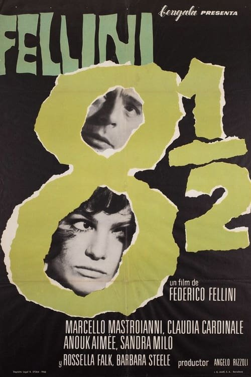

Fellini, ocho y medio (1963)

Plataforma: Max
Puntuación IMDb: 8.2/10
Duración: 2h 07m
Género: {{ENLACE_CATEGORIA}}
Sinopsis Rápida
Un director de cine en crisis creativa se refugia en sus recuerdos, sueños y fantasías, en un viaje introspectivo y onírico.
Sinopsis Detallada
Guido Anselmi, un afamado director de cine, se enfrenta a un bloqueo creativo y a una profunda crisis existencial. En un hotel de aguas termales, se sumerge en un laberinto de recuerdos, sueños y pesadillas, que se mezclan entre sí sin distinción. La película es una obra maestra del surrealismo, que utiliza la imaginación y la fantasía para explorar los conflictos internos del protagonista. 'Ocho y medio' es un viaje introspectivo que nos lleva al corazón de la creatividad y la autoconciencia.
¿Por qué tenés que verla?
- Una exploración surrealista y profundamente personal de la crisis creativa.
- La dirección innovadora y la estética onírica de Federico Fellini, altamente influyente.
- Su impacto en el cine y en el arte en general, como símbolo del cine autoral.
- Una obra maestra que continúa inspirando a cineastas y artistas.
Idea Extra
Comparación de 'Ocho y medio' con la filmografía de Fellini.
{{CONTENIDO_RELACIONADO}}